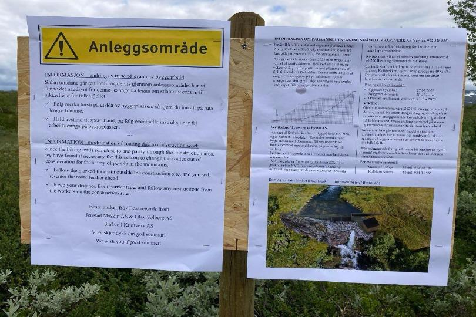
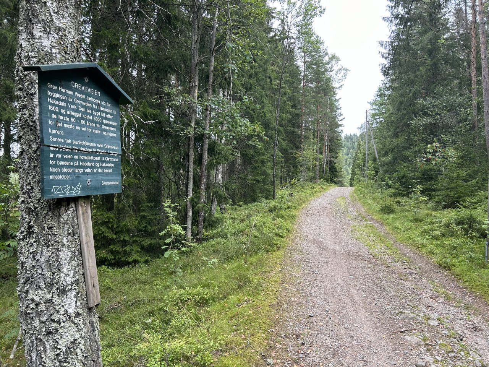
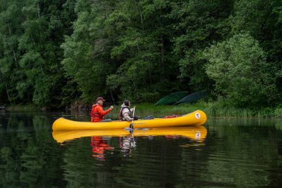
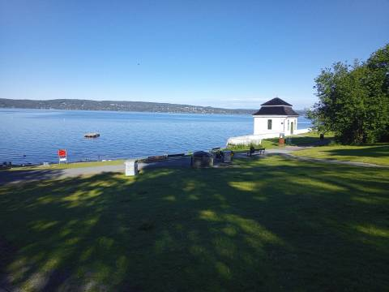

1. Vollasetra - Baardsgården /Storlidalen

Fotograf: Finn Nikolaisen
Kilde
Omlegging av sti på ruta Vollasetra - Baardsgården/Storlidalen
I forbindelse med bygging av småkraftverk i nedre del av Volladalen er stien lagt om forbi anleggsområdet. Endringen er merket med godt synlig plakat. For mer informasjon, besøk ut.no2. De beste opplevelsene til julekalenderen
Lag en julekalender som er fyllt med opplevelser i stedenfor ting! Hva med å gi bort en båltur, overnatting i skogen eller juleverksted? Her er DNTs beste tips til aktiviteter eller ute-opplevelser i adventskalenderen.
Synes du det er vanskelig å fylle 24 luker i en advents- eller julekalender? Det kan fort bli kostbart og vanskelig, ikke minst om det er flere i familien som ønsker seg kalender i år. Vi oppfordrer til å fylle morsomme og gode opplevelser for store og små. Bytt ut småting og kjøprepress med naturopplevelser og aktiviteter i nærmiljøet! Du trenger heller ikke mye nytt utstyr for å sette i gang en aktivitet. Lån av naboer eller venner, eller dra til BUA eller andre organisasjoner som låner eller leier ut utstyret man trenger. For mer informasjon, besøk dnt.no Du kan også finne flere forskjellige aktiviteter på dnt.no/aktiviteter3. Langs Greveveien fra Maridalen til Hakadals Verk (Sykkel Turer)

Fotograf: Martin Kvist
Kilde
Om turen
Den gamle Greveveien er en fortsettelse av Ankerveien og går fra Hammeren i Maridalen til Hakadals Verk i Nittedal. Den sto ferdig som kjørevei i 1825 og bandt jernverket i Hakadal sammen med stangjernhammeren i Maridalen, gruvevirksomheten ved Sognsvann og ikke minst Bærums Verk.. For mer informasjon om denne turen, besøk ut.no/turforslagHvis du er glad i å sykle og vil utforske flere sykkelturer, besøk her
4. Utforsk Oslo!

